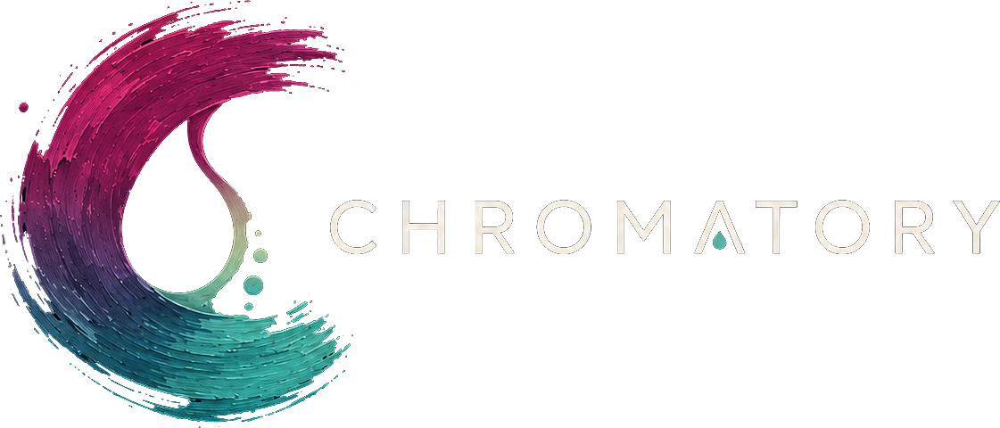
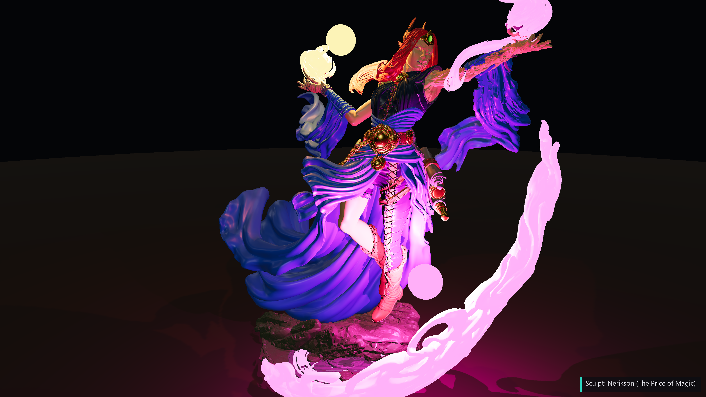
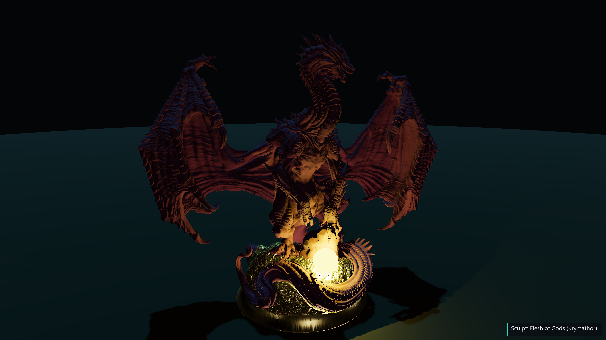
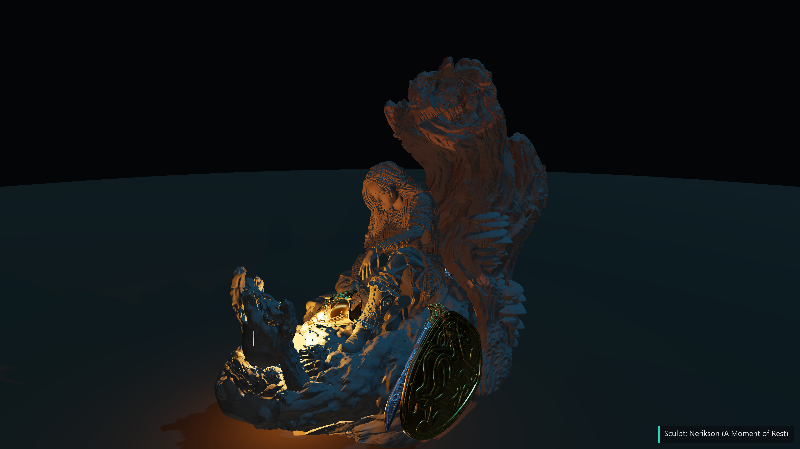
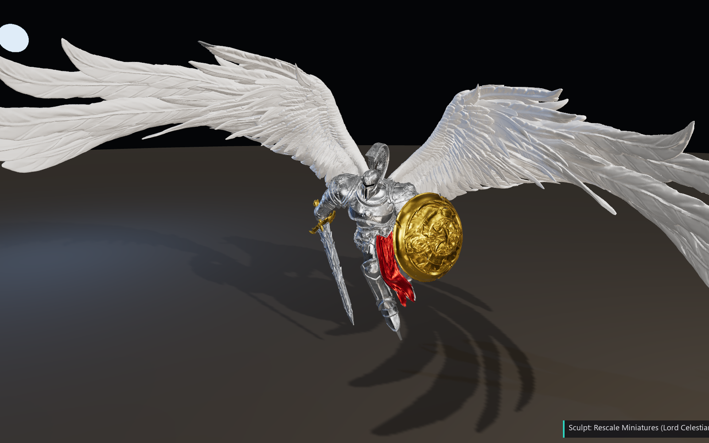

Work out your scheme, set up your lighting, and match colours to the paints already sitting on your shelf. All of it happens before the brush ever touches the model.
No sign-up, no download, no upload. They run entirely on your machine, so your models stay yours.
Drop in your STL and light it the way a photographer would. Preview NMM (non-metallic metal) and OSL (object-source lighting) with real cast shadows, so you can see where every highlight and shadow will land before you commit a drop of paint.
Model shown: The Price of Magic, sculpted by Nerikson
Printed a multi-part kit? Drag the parts in, nudge each one roughly where it belongs, and Chromatory snaps the mating surfaces together for you. Then export the whole thing as one merged STL, ready for the slicer.
Model shown: Krymathor, sculpted by Flesh of Gods
Non-metallic metal lives or dies by where the highlights sit, and real reflections move every time you turn the mini. So lock them. One click freezes the highlights exactly where they are, and you can orbit the whole model while they stay put. Every angle becomes a painting reference for the same NMM.
Model shown: Lord Celestian Prime, sculpted by Rescale Miniatures
Chromatory knows what's actually in your paint drawer, so every match, mix and scheme it suggests is something you could sit down and paint tonight.
Place your lights, preview NMM and OSL with true cast shadows, and paint per-region materials anywhere from matte to chrome.
Free in browserSnap multi-part STL kits together and export one printable model. Nothing is ever uploaded.
Free in browserPoint it at a painted miniature you love. Chromatory reads each area and works out a step-by-step scheme using the paints you already own.
Give it a scheme photo and a lighting render. For each element it hands back the shadow, midtone and highlight paints, and shows you where each one falls.
Real colour science (CIEDE2000 and Kubelka-Munk) finds the closest paint you own, or the mix that gets you there.
Catalogue your collection with swatch photos, and name a paint straight from a snap of the bottle.
Advice, a painting log and scheme mockups, all built on the paints you really have. It runs locally or in the cloud, and turns off completely if that's what you'd rather.
Everything runs on your own PC. Your data, photos and models stay with you. Pair your phone or browser to it whenever you want the bench in your hand.
Real prints under the Light Studio. It's the same interactive view you'll get on your own models.




Every miniature here is the work of its sculptor. The Price of Magic and A Moment of Rest are by Nerikson, Krymathor is by Flesh of Gods, and Lord Celestian Prime is by Rescale Miniatures. They're shown to demonstrate Chromatory. If Chromatory earns a place at your bench, you can keep it going on Patreon.
The browser tools run entirely on your device, so models are never uploaded anywhere. The full app is local-first as well. It lives on your PC, keeps your library in your hands, and only talks to the cloud when you ask it to.
Jump into the browser tools right now, or run the full local-first studio on your PC and pair your phone at the bench.